其他游戏
其他游戏近期正在进行调整，可能会出现部分项目游玩异常，敬请谅解！
| 项目 | 类型 | 介绍 | 特色 | |
|---|---|---|---|---|
| 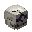 | 地盘大战 |
竞赛类 | 击杀对手以争夺地盘 它可以让对手活动空间减少 别忘记了，任何时候都要 注意自己的地盘大小 |
游戏前可进行职业选择 建筑时间、进攻时间 触碰敌方领地回弹 触碰水即死亡 |
| 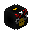 | 导弹战争 | 每一时间段都会有新的武器 你需要放置它，并让他 成功突破敌人的防线 在这热兵器的时代 你能保护你的基地吗？ |
随机的武器 部分可移动的炮台 |
|
| 巫术统治 | 你将扮演魔法师的角色 在狂乱的世界中占领信标 当然，对面也是魔法师 并且实力可能比你更强 |
游戏前的职业选取 药水与技能的一定CD 低配电脑可能会稍卡 |
||
| 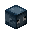 | 鱿鱼游戏 | 韩国电视剧的改编游戏 在这里，你将扮演鱿鱼游戏的主角 在纵多人中击杀掉他们 赢得最后的奖金 |
游戏与地图的复制 玻璃方块具有随机性 |
|
| 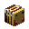 | 练刀区 | 战斗类 | 精简的套装，朴素的空岛地图 如果你需要快速提升你的实力 你需要在这里战斗一番 |
以少量中型空岛地图为主 安全区内不可攻击 |
| 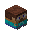 | 你说我做 | 休闲类 | 你需要根据所给提示进行操作 这或许会有点难度 但你会收到许多快乐 |
多达30+的说做游戏 任务时间较短 |
| 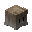 | 兔子与企鹅 | 关禁中的兔子与企鹅跑了出来 他们一些是在兔子园中跑出来的 还有一些是从海洋馆跑出来的 还记得动物怪谈手册吗 你需要活下去，就得杀掉他们 |
血量、技能升级 时间增加，怪物数量增加 |
|
| 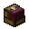 | 口袋游戏 | 经典的童年回忆，与地图游戏类似 但你需要按按钮来操作 这难不倒你吧？ |
游戏过程中的粒子环绕 音乐开启、关闭 观战功能 |
|
| 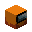 | 在我们之间 | 船员中出了个叛徒，你需要找出他 这或许会有些烧脑，但你要小心 特别是那些靠近你的人 |
拥有视野盲区功能 你可以查看监控 杀手可钻下水道 |
|
| 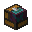 | 地图游戏 | 经典的童年回忆，简单的操作 超多童年游戏汇聚这里 你应该都懂得他们的玩法吧？ |
胜利时候的烟花发放 按照游戏分数进行排名 |
|
| 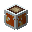 | 地板是岩浆 | 这里是火山口，随时有喷发的可能 你要用方块尽量往上挖，越快越好 尽可能撑到最后 你会是存活下来的那个人吗？ |
职业进行选择 岩浆速度随时间增快 游戏结束后的烟花庆祝 一定时间后的PVP开启 |
|
| 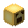 | 小心坠落 | 在迷人的方块中，一直往下跑 你不仅需要注意方块的位置 还要注意那个或许一直用弓箭 瞄准你脑袋的人 |
幸运海绵方块功能 职业选择功能 最终决赛功能 |
|
| 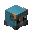 | 建筑战争 | 化身创造模式，根据主题制作建筑 这或许会很快结束，但请你记住' - '&7千万不要暴露你很LOW的建筑水平 |
主题超级投票功能 结束给建筑评分功能 一键地板、粒子更换 更多迷你方块获取 |
|
| 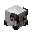 | 抢羊大作战 | 农场家的羊跑了出来 你要尽可能的将它们牵回来 小心对面那些偷羊贼 他们随时会偷走你的羊 |
死亡复活时失明 奖励羊特殊加分 仅拿鞍时可抢羊 |
|
| 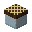 | 棋盘游戏 | 这里棋盘类型应有尽有 这肯定难不倒你，并且 还会给你无尽的娱乐空间 |
多达8类棋盘任你挑选 更为立体的3D棋盘 |
|
| 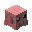 | 相扑 | 利用你手上的一切武器 将对手击打出场外 你能赢得最后的胜利吗？ |
仅为1v1的决斗，无论多少人 开局物品可自定义更换 击退棒子将敌人击倒 |
|
| 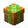 | 礼物破坏者 | 小镇的捣蛋节马上到了 你在这里是一名破坏者 尽可能的破坏所有礼物 别忘了，你手上有雪球 它可以随时击退敌人 |
游戏中悦耳的音乐 雪球具有击退功能 |
|
| 鞘翅飞行 | 你将会穿着鞘翅在世界飞行 并到达最后的终点圈 对了，记得观察手中火箭数量 合理掌握它，能让你飞的更快乐 |
行踪飞错可进行回档功能 奖励圈获取额外火箭 到达终点后进行排名 |
||
| 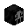 | 黎明杀机 | 一名屠夫掌管着六名人类 你需要破译密码机进行逃亡 但你怎么知道那个逃离这里的人 是不是你呢？ |
一直处于夜晚模式 技能加点功能 可尝试自行解钩 非单方块不能跳跃 |